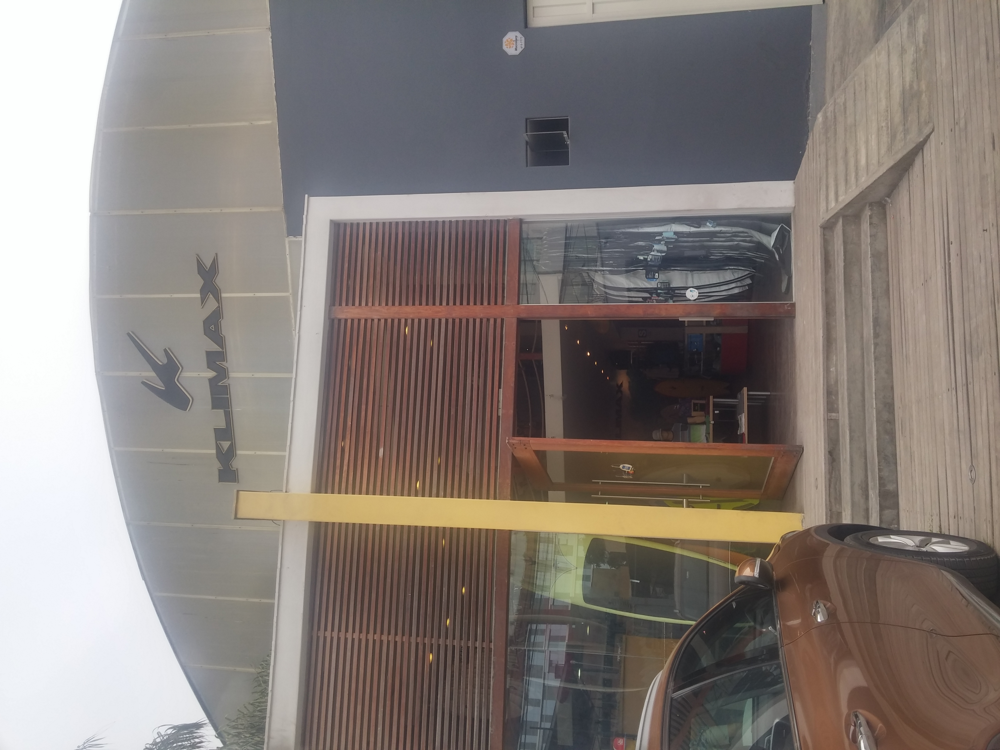
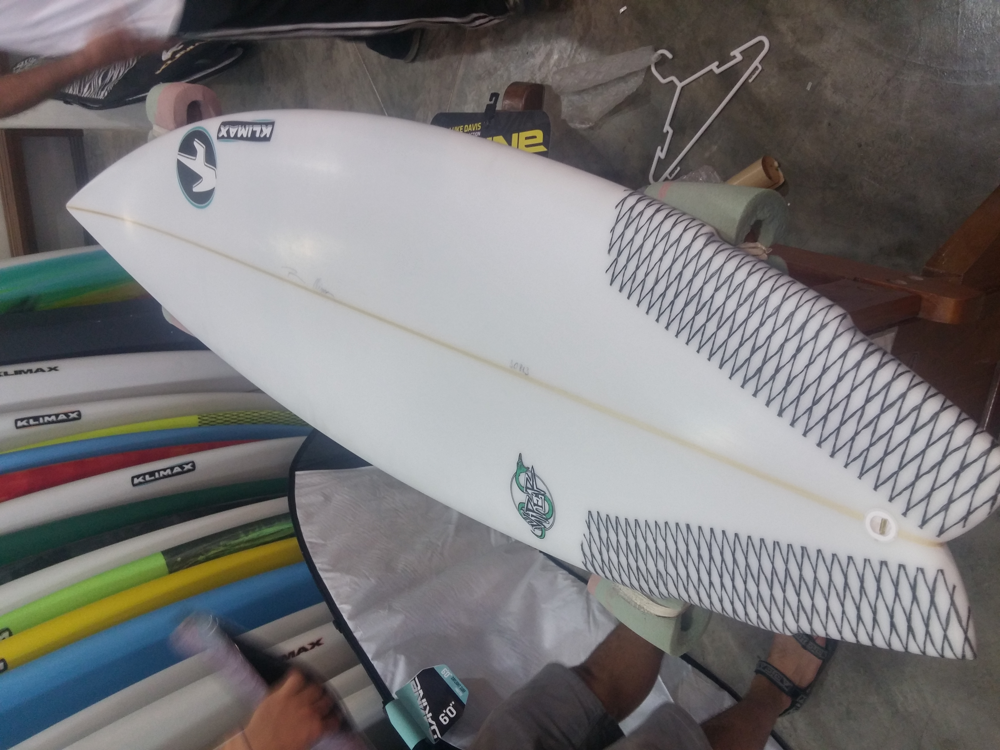

My site- Idan Sobel
My name is Idan Sobel,
im 29 years old, im a Bar tender and i live in Hadera.
My true passion in life is surf and travelling around the world.
Im a software testing student at the Automation College and im looking forward to learn new things.
After my military service i went on a 4 month trip .
I started in Peru, visited Cusco where i did some hiking, rented a motorcycle for a week and traveled with it along the roads, and of course visited the Machu Pichu.
But the main reason for my trip was to surf, so i took a flight to Lima (the capital city of Peru) to buy a surfboard. I found a nice surfboard shop of a local brand called "Klimax"
I spent there over two hours, amazed by the different surfboards and equipment. The store manager was very nice abd gave us a tour in the the surfboard production department and it was really cool!
The shop and the chosen board :


Here is the route I took on the surfing trip:
- Mancora, Peru- a very small surfing village in northwestern Peru.
- Montanita,Ecuador stayed there for two weeks
- Santa Teresa,Costa Rica- small fishing and surfing town
- El Tunco, El- Salvador- one of the most dangerous country in the world but i stayed only at El Tunco which is a safe and beautifull surfing village
I surfed 2 sometimes 3 sessions a day, each session about 2 hours so it was very exhausting but i enjoyed every second. In the rest of the time I enjoyed good local restoraunts,bars and just relaxing.
After that big trip i went for two weeks in Arugam bay Sri Lanka - another surfing village.
My last trip was to Puerto Escondido - Mexico. Each trip teaches me more about surfing, the ocean and fills me with good energy.